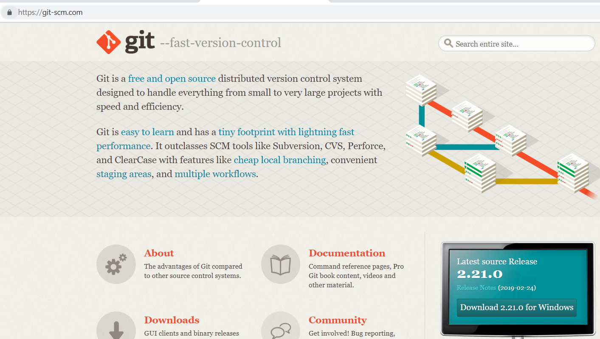
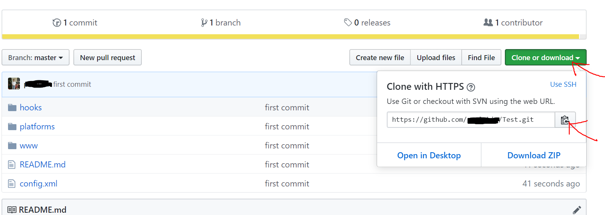

We need to upload our project to github.com so that we will be able to build an apk file using build.phonegap.com. So, go to github.com and sign up for a free account.
In order to upload files to github.com we also need to download and install git-scm. So, go to git-scm and download and install git. git is a CLI (command line interface) tool used to communicate with github for purposes of uploading or downloading files.

Next, create a new repository in github and call it Test. Let your project be Public so that you can use github for free. The Private setting is for paid accounts. Then click on the green button: "Create Repository"
Copy the line indicated by the red arrow below.

Then open a cmd terminal and navigate to your project folder C:\PhoneGapProjects\Test. Then issue the following commands:
git init
git add .
git commit -m "first commit"
git remote add origin https://github.com/../Test.git
git push -u origin master
Note that the line "git remote add origin..." will be different for you. Just use the line you copied from github above. Also note that there is a space between "git add" and the dot.
Next refresh your github page and click on the green button: "Clone or Download". Then click on the copy to clipboard icon as shown in red below:

This concludes this lesson. We will be using the clipboard link to build an apk file using build.phonegap.com in the next lesson.